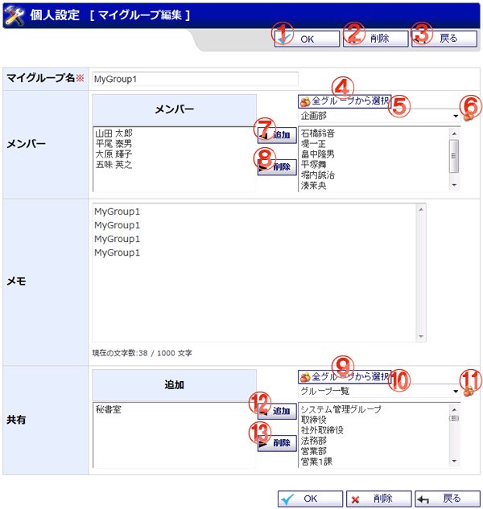

マイグループの登録を行います。

機能説明
OKボタンマイグループ編集確認画面へ遷移します。 |
削除ボタンマイグループを削除します。 |
|---|---|
戻るボタン遷移元の画面へ遷移します。 |
全グループから選択ボタンポップアップで全グループから選択画面が開きます。 |
グループ選択コンボグループを選択します。選択したグループの所属メンバーが、グループ所属メンバーリストに表示されます。 |
グループボタンポップアップでグループ選択画面が開きます。 |
追加ボタングループ所属メンバーリストで選択したメンバーを、マイグループメンバーリストに移動します |
削除ボタンマイグループメンバーで選択したメンバーを削除します。削除されたメンバはグループ所属メンバーリストに移動します。 |
全グループから選択ボタンポップアップで全グループから選択画面が開きます。 |
グループ選択コンボグループを選択します。選択したグループの所属メンバーが、グループ所属メンバーリストに表示されます。 |
グループボタンポップアップでグループ選択画面が開きます。 |
追加ボタングループ所属メンバーリストで選択したユーザ、グループを、共有先リストに移動します |
削除ボタン共有先リストで選択したユーザ、グループを削除します。削除されたユーザはグループ所属メンバーリストに移動します。 |
表示・入力項目説明
マイグループ名
マイグループ名を入力します（20文字以内）。
メモ
メモを入力します（1,000文字以内）。
メンバー
グループ所属メンバーリストから選択したメンバーを追加ボタンでマイグループリストに加えます。
共有
グループ所属メンバーリストから選択したユーザ、グループを追加ボタンで共有先リストに加えます。